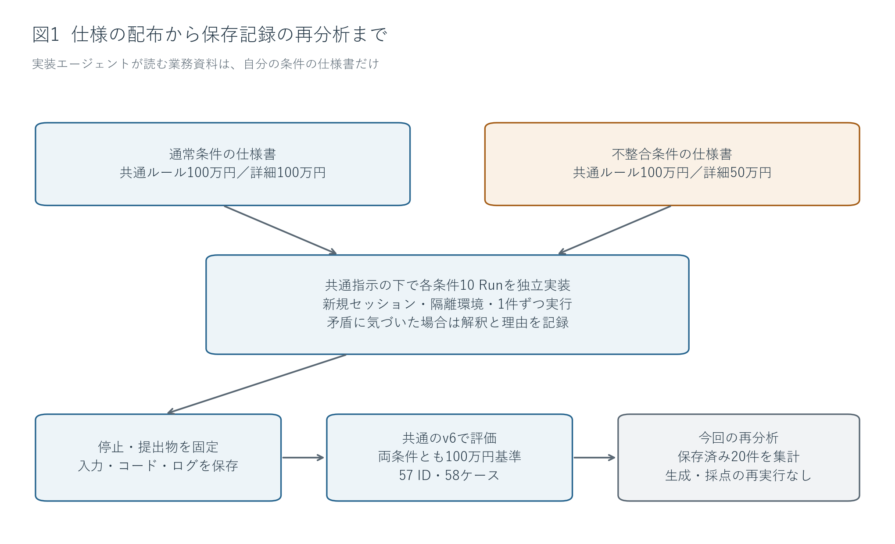
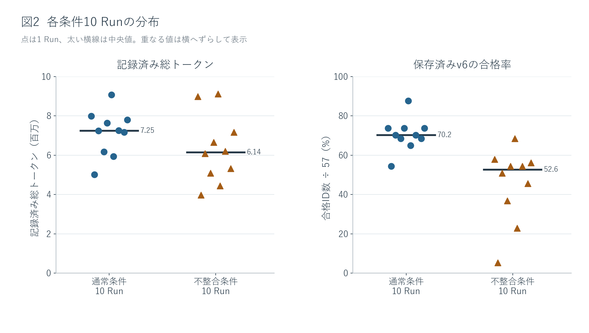
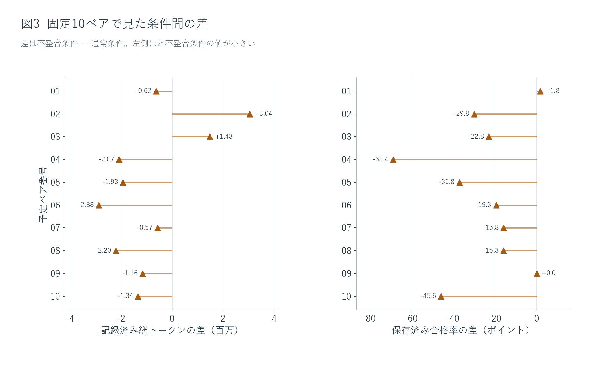
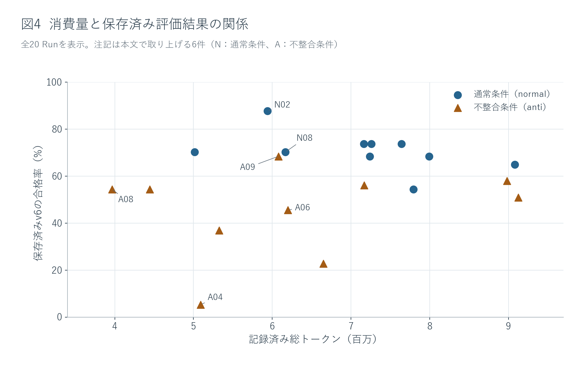
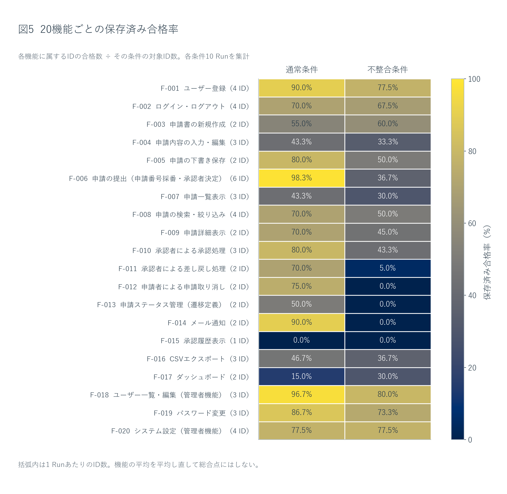
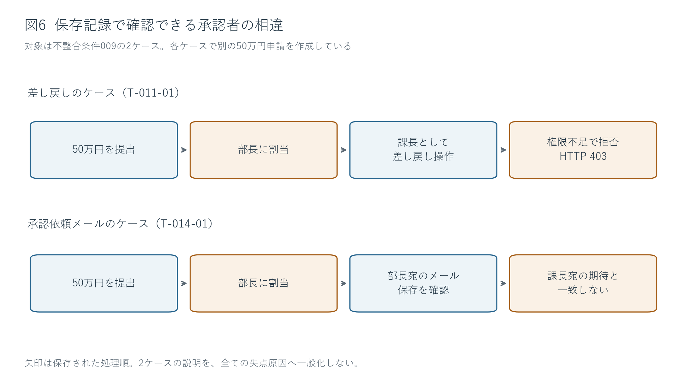

仕様書内の不整合とAI実装の消費トークン・評価結果
既存20 Runの再分析｜通常条件10件・不整合条件10件｜日本語レポート v2
1. 背景と研究目的
仕様書の複数箇所に異なる業務ルールが書かれていると、実装者はどの記述を採用するか判断する必要がある。AIに実装を任せる場合も、矛盾した記述を同時に満たすことはできない。その際、実装に使うモデル利用量や、完成したアプリが元の業務要件にどの程度適合するかに、どのような違いが現れるだろうか。本研究は、この問いを一つの申請管理アプリで探索した。
題材は、ユーザー登録、申請の作成・提出、承認・差し戻し、通知、履歴、管理者設定など、20機能を持つアプリである。申請金額に応じて課長または部長を承認者に選ぶ。本来の共通ルールは「100万円未満は課長、100万円以上は部長」である。実験では、仕様書内の提出処理の詳細にある承認閾値だけを変え、ほかの業務要件は維持した。資料1
表1 実装に渡した仕様と、共通評価が用いる基準
| 比較する記述 | 通常条件（normal） | 不整合条件（anti） |
|---|---|---|
| 仕様書冒頭の共通承認ルール | 100万円未満は課長、それ以上は部長 | 同左 |
| 提出処理F-006の詳細 | 999,999円以下は課長、1,000,000円以上は部長 | 499,999円以下は課長、500,000円以上は部長 |
| 仕様書内の整合性 | 二つの記述が一致 | 50万円以上100万円未満で承認者が食い違う |
| 両条件に適用した評価基準 | 元の100万円基準 | 元の100万円基準 |
たとえば75万円の申請では、通常条件のどちらの記述も課長を指定する。不整合条件では、冒頭のルールは課長、詳細は部長を指定する。この不一致を本研究ではAP-001と呼ぶ。「不整合条件」は、この特定の食い違いを含む条件名であり、悪い結果が出ることを前提とした分類ではない。
研究の主な比較軸は、1回の実装で記録された総トークンと、共通評価の合格率である。判断記録やコードの読解は、数値の違いを説明するために用いる。矛盾への言及自体を加点したり、特定の性格や態度を品質として採点したりはしない。また、50万円を採用した実装が元の100万円基準と合わないことだけで、実装者が非合理的だったとは判断しない。
本報告は、取得済みの20回の実装と保存済み評価を読み直したものである。研究の経緯を知らない読者にも、何を比較し、何が観測され、その結果をどこまで解釈できるかが伝わるよう、方法、結果、考察の順に示す。
2. 実験方法と指標の意味
2.1 どのように実装と評価を行ったか
1 Runは、新しいセッションと隔離した環境で行う1回の実装である。通常条件と不整合条件を10 Runずつ、計20 Run実行した。各Runに渡した業務資料は自条件の仕様書だけで、相手条件、研究管理資料、非公開評価コードは渡していない。資料2
表2 20 Runに共通する実行条件
| 項目 | 実施内容 |
|---|---|
| 実装モデル | Muse Spark 1.2 Contributor。全20件で同じモデル |
| 推論設定・上限 | effort未指定、1 Runの経過時間上限60分 |
| 同時実装数 | 1件。実装内の子エージェントは使用しない |
| 開始状態 | 新規セッション・隔離環境。業務アプリの共通骨格は配布しない |
| 共通の実装環境 | React／TypeScript、ASP.NET Core、SQLite |
| 矛盾への対応指示 | 気づいた箇所、採用した解釈、理由を記録し、自分で判断して進める |
| 人間への確認 | 無人実行として、質問や承認待ちで停止しない |
| 実装の固定 | 完了宣言または上限で停止し、提出物と記録を保存 |
| 評価 | 固定した共通v6を適用。自主テストの出来は加点しない |
保存済みの評価では、共通v6の自動評価器がブラウザでアプリを操作し、画面の表示や保存メールなどを、元の業務要件から定めた期待結果と照合した。
共通指示は全20件で同一だった。したがって、後に示す矛盾の記録は、この明示的な指示の下で得られた行動である。無指示での自発的な検出や、人間に質問できる条件との比較は行っていない。

図1のとおり、実装の提出物を固定した後に共通評価を行い、その保存記録を今回再集計した。取得した20件はすべて保持し、低い得点や測定上の問題を理由とした除外・取り直しはしていない。最初のantiも、完了宣言後の管理停止と旧評価の記録を残したまま含めている。今回、新しい実装、アプリの動作確認、採点は実行していない。
実行順は、通常と不整合を一つずつ含む10ペアを事前に作り、seed 20260910でペア内の順序を固定した。ここでのペアは実行順のブロックであり、同じモデル乱数や同じ生成途中状態を共有する組ではない。分析の単位はRunで、57評価IDや58ケースを独立した実装実験の数には数えない。
2.2 何を数え、どこまで確かめたか
記録済み総トークンは、保存されたモデル利用量の入力と出力を合計した値である。実装Run内の作業に使った記録を集計し、提出後の採点や研究管理の作業は含めない。全20件の元の記録値を使う。通常5 Run・不整合1 Runに計29回のHTTP 400応答があり、その応答にはusageがなかったため、未記録分は合計に含まれない。未知の利用量を0で補完したり、実消費総量が確定したと扱ったりはしない。
保存済みv6の合格率は、「そのRunで合格と記録された評価ID数÷57×100」である。57 IDは等配点で、一つのIDに必要なケースがすべて合格したときに1点を得る。T-006-05だけは境界の両側を確認する2ケースがあるため、1 Runにつき58ケースになる。片方だけ合格しても、このIDは合格にならない。資料3
評価の実行記録は20件分あるが、有効と確認された評価は0件である。旧裁定はinvalid（無効）1件、pending（判定待ち）19件のまま保持する。以下で比較するのは、その評価器が実際に返した合格率である。通常操作で到達できる画面を評価器が見つけられない場合や、前提となる処理が成立せず後続判定へ進めない場合も含むため、アプリの総合品質が確定した数値とは区別する。
平均・中央値・標準偏差はRun単位で計算する。主比較には全20件を用い、ペア差、前後半、1ペアずつ除いた結果は、平均の違いが特定の実行に偏っていないか調べる補助分析とする。機能や依存関係による分類も得点の変更ではなく、保存済みの差の所在を調べる事後的な分析である。
3. 結果：全体像から具体例へ
3.1 不整合条件は、記録済みトークンと保存済み合格率の平均がともに低かった
表3 全20 Runを含む条件別の記述統計
| 指標 | 通常条件：10 Run | 不整合条件：10 Run |
|---|---|---|
| 記録済み総トークンの合計 | 71,287,304 | 63,034,683 |
| 1 Runあたり平均トークン | 7,128,730.4 | 6,303,468.3 |
| トークンの中央値 | 7,248,219 | 6,139,945 |
| 合格ID数の平均 | 40.2 / 57 | 25.8 / 57 |
| 保存済み合格率の平均 | 70.5% | 45.3% |
| 合格ID数の中央値 | 40 | 30 |
| 合格ID数の標準偏差 | 4.76 | 10.73 |
両条件を合わせた記録済み総トークンは134,321,987である。不整合条件は通常条件より、1 Runあたり平均825,262.1トークン、相対値で11.6%少なかった。合格ID数は平均14.4少なく、合格率の差は25.3ポイントだった。ここで11.6%は記録済みトークンに基づく値であり、未記録分を含む実消費量の差を確定したものではない。資料4

図2では、通常条件の合格ID数は31〜50、不整合条件は3〜39に分布した。不整合条件は低い側への広がりが大きく、標準偏差も通常条件より大きい。一方、トークン分布には両条件が重なる範囲があり、すべての不整合Runがすべての通常Runより少ないわけではない。中央値もトークンと合格ID数の両方で不整合条件が低かった。
3.2 平均の差と、個々のRunの違い
表4 全20 Runの値を固定10ペアで示した一覧
各行の番号はRun名の末尾に対応する。たとえば002行はnormal-002とanti-002である。トークン列はすべて記録済み総トークン、合格列は保存済みの合格ID数である。
| ペア | normalのトークン | normalの合格 / 57 | antiのトークン | antiの合格 / 57 |
|---|---|---|---|---|
| 001 | 7,791,933 | 31 | 7,168,678 | 32 |
| 002 | 5,938,760 | 50 | 8,981,662 | 33 |
| 003 | 7,642,137 | 42 | 9,125,827 | 29 |
| 004 | 7,165,382 | 42 | 5,091,795 | 3 |
| 005 | 7,257,799 | 42 | 5,326,742 | 21 |
| 006 | 9,080,470 | 37 | 6,200,432 | 26 |
| 007 | 5,014,337 | 40 | 4,443,911 | 31 |
| 008 | 6,165,950 | 40 | 3,965,456 | 31 |
| 009 | 7,238,639 | 39 | 6,079,458 | 39 |
| 010 | 7,991,897 | 39 | 6,650,722 | 13 |
同じ予定ペア内で比べると、不整合条件の合格ID数が少ないのは8ペア、同じは1ペア、多いは1ペアだった。記録済みトークンが少ないのも8ペアだった。ペア001では不整合条件が1 ID多く、ペア009では同じ39 IDを、より少ない記録済みトークンで得ていた。

図3では、ペア004の合格率差が特に大きい。ただし、各ペアを一つずつ除く10通りの集計でも、平均合格ID数の差は不整合−通常で−16.11〜−11.67となり、すべて負だった。最小3 IDのanti-004を含むペアだけが、全体の平均差を作ったわけではない。
トークン差には実行順による違いも見られた。前半5ペアの平均差は−20,261.4でほぼ同量、後半5ペアでは−1,630,262.8だった。合格率差は前半−31.2ポイント、後半−19.3ポイントで、いずれも不整合条件が低かった。前後半は結果を見て区分した補助分析であり、時間帯そのものの効果を示す値ではない。資料5
3.3 近い消費量でも、合格した項目数は異なった

図4の約600万トークン付近では、normal-002は50 ID、normal-008は40 ID、anti-009は39 ID、anti-006は26 IDに合格していた。投入量が近いRun同士にも、保存済み評価結果の違いがある。全20件で記録済みトークンが最少のanti-008は約397万トークンで31 ID、anti-004は約509万トークンで3 IDだった。消費量の大小と合格項目数の大小は、一対一には対応していない。
補助的に「条件内のトークン合計÷合格ID数の合計」を計算すると、通常条件177,331.6、不整合条件244,320.5トークン／合格IDとなり、不整合条件が37.8%大きい。合格ID数の合計は402対258である。この比は、記録済みの投入量と通過項目数の関係を表す。金銭費用や業務価値を測ったものではなく、独立した機能一つを完成させるための必要量でもない。
3.4 差はどの機能に現れ、どこまで評価できたか

図5では、提出処理の合格率は通常98.3%対不整合36.7%、差し戻しは70.0%対5.0%、メール通知は90.0%対0.0%だった。承認者が関係する複数の機能で差が見られる。一方、新規作成は通常55.0%対不整合60.0%、ダッシュボードは15.0%対30.0%で、不整合条件の方が高かった。システム設定は両条件とも77.5%、承認履歴表示は両条件とも0.0%だった。
したがって、合格率がすべての機能で一様に低下したという結果ではない。また、同じ機能内でも必要なID数は異なる。図5の20個の割合を平均し直すと正式な57 ID等配点と重みが変わるため、総合値には用いていない。資料6
表5 保存されたケースの結果と判定への到達範囲
| 記録の種類 | 通常条件 | 不整合条件 |
|---|---|---|
| 要求ケース数 | 580 | 580 |
| 合格と記録されたケース数 | 412 | 265 |
| failと記録されたケース数 | 116 | 188 |
| blockedと記録されたケース数 | 52 | 127 |
| errorと記録されたケース数 | 0 | 0 |
| 業務上の判定まで到達したケース数 | 486 | 352 |
| 別途分類された前提未成立のケース数 | 50 | 127 |
合格・fail・blocked・errorの四つの状態はケース数580を分けた内訳である。その後の到達範囲は別の分類で、前の行に加算しない。通常条件のblocked 52と前提未成立50も同じ意味の列ではない。画面探索の失敗などがfailに残ることもあるため、failは実装責任の確定を意味せず、blockedだけで全ての未到達を数えることもできない。
業務上の判定への到達は通常486/580に対し不整合352/580だった。非合格483ケースのうち、責任の分類が未確定なのは477ケースである。これらは合格率の差を理解するための観測範囲であり、同じ数だけ独立した実装欠陥が見つかったという意味ではない。資料7
3.5 記録された解釈、固定コード、評価中の挙動はどこまで対応したか
表6 仕様解釈に関する証拠を層ごとに整理した結果
| 証拠の層 | 通常条件 | 不整合条件 | 確認した範囲 |
|---|---|---|---|
| 提出された判断記録 | 10件とも100万円を採用 | 10件とも不一致に言及し、50万円を採用 | 保存された説明文 |
| 固定backendの承認分岐 | 10件とも100万円 | 10件とも50万円 | 保存ソースの分岐 |
| 閾値周辺の保存済み合否 | 直接3 IDは全10件で合格 | 7件で詳細側50万円の選択に整合する合否パターン | 選択した境界ケースの既存結果 |
| 通信・メールの具体的読解 | 本節の具体例には選んでいない | anti-009の差し戻し・メールの2ケース | 保存済み通信とメールの内容 |
不整合条件の判断記録では、冒頭の100万円基準と提出処理の50万円基準を対比し、提出処理の具体的な記述を優先する理由が書かれていた。固定コードでも、50万円以上を部長へ割り当てている。これは全10件の記録と実装の選択が一致したという事実であり、今回10件を起動して動作確認したという意味ではない。
保存済みの合否で同じパターンが見られた7件では、100万円未満について課長を期待するケースが不合格となり、100万円以上で部長を期待するケースは合格していた。残るanti-004、005、010は同じパターンに揃っておらず、準備段階での不成立などを含む。7件の対応と10件の静的な選択を混同しない。資料8

図6の差し戻しケースでは、50万円の申請が部長へ割り当てられた後、評価器が課長として差し戻しを行い、権限不足の403応答を受けていた。メールのケースでは、別に作成した50万円の申請について、部長宛の承認依頼メールが保存されていたが、評価器は課長宛を期待していた。「メールが生成されなかった」という説明は、この保存記録に合わない。この2ケースは同じRunに属するが、同じ申請レコードではない。資料9
3.6 承認閾値に関係する項目に、合格数の差が集中した
保存した評価器の処理と台帳を読み、57 IDを、閾値を直接確認する3 ID、承認者の前提に依存する後続10 ID、それ以外の44 IDへ分類した。後続群には承認、差し戻し、取り消し、状態遷移、通知、履歴の対象項目が含まれる。これは結果を説明するための事後分類で、配点や合否は変えていない。資料10
表7 依存関係で分けた合格ID数の所在
| 分類 | 通常の合格 / 対象ID | 不整合の合格 / 対象ID | 合格数の差：通常−不整合 |
|---|---|---|---|
| 閾値を直接確認する3 ID | 30 / 30 | 0 / 30 | 30 |
| 承認者の前提に依存する後続10 ID | 61 / 100 | 1 / 100 | 60 |
| その他44 ID | 311 / 440 | 257 / 440 | 54 |
| 全57 ID | 402 / 570 | 258 / 570 | 144 |
直接群と後続群の差は合計90で、全体差144の62.5%に当たる。つまり、合格数の差の過半が、承認閾値とつながる13 IDに位置していた。その他44 IDにも54の差があり、合格率では70.7%対58.4%、12.3ポイントの差が残った。ここでの570は57 IDを10 Run分数えた評価機会であり、独立した実験数ではない。
4. 考察と限界
4.1 この条件下では、不整合の記録と詳細記述の選択が両立した
本研究で得られた中心的な説明は、不整合条件の実装が、矛盾を記録したうえで詳細記述側の50万円を採用したというものである。根拠は、表6で示した全10件の判断記録と固定コードの対応にある。さらに7件では、その選択に整合する既存の合否パターンがあった。単に「矛盾に言及しなかったため誤った」という説明では、これらの記録を十分に説明できない。
この選択には、具体的な処理手順を優先するという説明が成り立つ。F-006は提出時の承認者決定を数値で指定しており、そこを実装の根拠としたことは、保存された理由と一致する。一方、研究の評価は元の100万円基準に固定されているため、この選択は評価上の不一致になる。評価への不適合という観測と、矛盾した二つの記述のどちらを優先する判断が合理的かという評価は、分けて考える必要がある。
ただし、詳細記述を優先した理由の文章はモデルが作成した説明である。実際の内部処理を直接観測したものではなく、コードと一致する説明が事後的に整えられた可能性も排除できない。また、全Runに矛盾の記録と判断継続を求めていたため、全10件に記録があることから、無指示での矛盾検出率や、人間への確認が不要であることを推定することはできない。
実務上は、同じ仕様に複数の判断根拠がある場合、矛盾の指摘を求めるだけでは、期待するルールの選択まで揃うとは限らないと考えられる。優先順位や確認先の明確化は、この観測から導かれる検証候補である。今回、その指示を追加して比較したわけではないので、どれだけ改善するかは未確認である。
4.2 複数機能の低い合格率には、共通前提を通じた連動が含まれる
承認者の選択は、提出処理だけで完結しない。その後の操作権限、通知先、状態の変更に関わる。図6では、部長に割り当てられた申請を課長が差し戻そうとして拒否された例と、部長宛のメールが課長宛の期待と一致しなかった例が確認できた。この記録からは、一つの閾値の選択が、複数の評価項目に現れ得る具体的な経路を説明できる。
したがって、表7の後続群で60の合格数差があることを、60個の独立した機能欠如と読むと、同じ承認者の前提を何度も数える可能性がある。得点は元の業務要件に対する適合を集約するために有用だが、得点の差と不具合の種類・原因数は一致しない。今回の結果を理解するには、合計点に加えて、どの準備や役割を複数項目が共有しているかを見る必要がある。
もっとも、62.5%は分類した13 IDに差が位置するという算術上の比率である。群内には準備失敗や別原因の不合格も含まれ、具体的に通信とメールを示したのは2ケースである。そのため、差の62.5%がAP-001によって生じた、あるいは閾値を直せば90の合格が回復する、という因果的な結論には進めない。
逆に、承認者の期待との違いが見えたことをもって、評価器の不具合と断定することもできない。両条件を元の100万円基準で評価する設計である以上、そこから外れた承認先を不合格とすること自体は共通基準に沿っている。採点の適否を検討する際は、業務要件との不一致と、評価器が通常の画面操作を実行できない問題を、それぞれの証拠で判断する必要がある。
4.3 少ない記録済みトークンは、そのまま効率改善を意味しない
不整合条件では平均の記録済みトークンが11.6%少なかったが、保存済みの合格ID数は35.8%少なかった。合格IDあたりの記録済みトークンが37.8%大きくなるのは、この二つの変化の関係による。この観測からは、消費量の減少だけを取り出して、同じ達成度をより少ない投入で得たと説明することはできない。
一方、通常条件が常に効率的だったとも言えない。ペア001と009には、不整合条件が少ないトークンで同等以上の合格ID数を得た例がある。図4でも、似た投入量で異なる合格数が得られている。平均的な傾向を述べる際にも、実行ごとの重なりや反例を残すことで、条件名だけから各Runの結果が決まるような読み方を避けられる。
トークン差の理由については、矛盾の解釈、実装方針、自主検証、修正の反復など複数の説明が考えられる。しかし、今回の集計では、それぞれの作業が総量差に何トークン寄与したかを分離していない。低い合格率のRunが未実現の作業を残して早く終わった可能性や、難航したRunが多くの修正を行った可能性も、総量と点数だけでは選び分けられない。
さらに、前半5ペアのトークン差はほぼなく、後半で差が大きかった。10ペアを単位とする再標本化でも、平均トークン差の区間は0をまたいだ。この結果は、今回の平均差の方向が、別の実行時期にも安定して現れると主張する根拠が十分でないことを示す。記録されていないusageの影響も、この区間では補正していない。詳しい計算と補助指標は補足分析に示す。
4.4 残る差は観測できたが、その原因はまだ分け切れていない
直接群と後続群を除く44 IDにも、12.3ポイントの合格率差が残った。また、1ペアずつ除いても平均合格ID差の符号は変わらなかった。これらは、全体の差を直接の閾値項目や一つの極端なRunだけで説明する見方に、追加の検討が必要であることを示す。
ただし、44 IDを残した集計は「AP-001の影響を除去した品質」を測ってはいない。この事後分類に入らない項目にも、前段の処理や実装方針を通じた関連があるかもしれない。到達範囲も通常486ケース、不整合352ケースと異なり、評価器側の探索や準備の制約が、合格率を低くする可能性がある。未到達を除いて分母を小さくすれば異なる問いに答えることになるため、正式な分母57は維持した。
このため、残差の候補には、実際の要件未実現、連動する前提の違い、評価器との操作上の適合、実装ごとのばらつきが併存する。どれか一つを先に採用するより、保存したケース、画面、コードを対応させて確認する必要がある。現時点の477ケースの責任未確定を、実装側または評価側のどちらかへ一括で割り当てる根拠はない。
4.5 本研究から広げられる範囲
対象は、一つのアプリ、一種類の閾値不整合、一つのモデル構成、各条件10 Runである。結果を、仕様書のあらゆる矛盾、他のモデル、対話しながら開発する運用へそのまま一般化することはできない。評価の合格率についても、利用者が通常の操作で全要件を達成できると確認した品質値ではない。この限界は、観測された平均差や記録の対応を消すものではなく、その説明が届く範囲を定める。
次に区別して確かめるべきなのは、仕様記述の優先順位を変えた場合の選択、承認者の前提に依存する後続機能の成立、別の実行群でも消費量の傾向が続くか、という三点である。これらは今回の結果から導いた検証候補であり、本報告で実施した作業ではない。今回の成果は、新しい条件を追加せず、既存20 Runから、観測された差とその説明候補を分けて整理したことである。
5. 結論
この20 Runでは、不整合条件の記録済み総トークンは平均約630万で、通常条件の約713万より11.6%少なかった。同時に、保存済みv6の平均合格率も45.3%で、通常条件の70.5%より25.3ポイント低かった。消費量の減少だけから、達成度を保った効率改善とは結論できない。
判断記録と固定コードでは、不整合条件の全10件が50万円を採用していた。詳細記述を優先したという説明はこれらの記録に合い、7件の閾値周辺の合否と、2ケースの承認者・通知先の相違も、その選択に整合する。一つのルール選択が後続の複数項目に現れ得ることを踏まえると、合格数の差をそのまま独立した欠陥数や一般的な実装能力の低下へ読み替えることはできない。
本研究から言えるのは、この共通指示と評価条件の下では、不整合を記録して実装を進めること、元の業務ルールへの適合、記録された消費量は、それぞれ分けて評価する必要があるということである。保存済みの数値と具体的記録をその根拠として提示し、未確定の品質や原因を残したまま、研究目的への限定された回答とする。